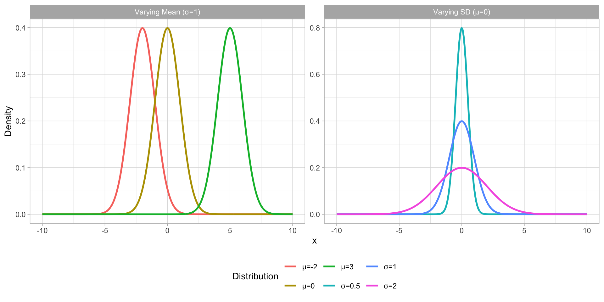
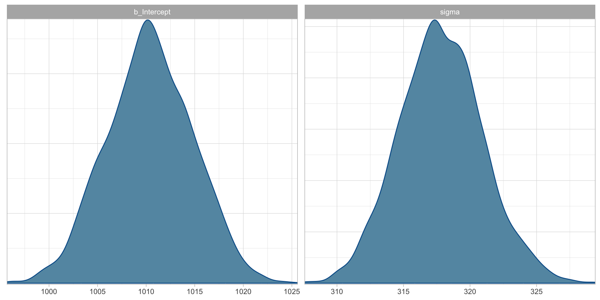

# A tibble: 5,000 × 7
Subject Item IsWord PhonLev RT ACC RT_log
<chr> <chr> <fct> <dbl> <int> <fct> <dbl>
1 15308 acreage TRUE 6.01 617 correct 6.42
2 15308 maxraezaxr FALSE 6.78 1198 correct 7.09
3 15308 prognosis TRUE 8.14 954 correct 6.86
4 15308 giggles TRUE 6.22 579 correct 6.36
5 15308 baazh FALSE 6.13 1011 correct 6.92
6 15308 unflagging TRUE 7.66 1402 correct 7.25
7 15308 ihnpaykaxrz FALSE 7.47 1059 correct 6.97
8 15308 hawk TRUE 6.09 739 correct 6.61
9 15308 assessing TRUE 6.37 789 correct 6.67
10 15308 mehlaxl FALSE 5.80 926 correct 6.83
# ℹ 4,990 more rows01 - Introduction
Stefano Coretta
Disclaimer
This workshop introduces you to the very basics of Bayesian regression modelling.
To be able to able to analyse real-world data you will need much more!
The numbers have no way of speaking for themselves. We speak for them. We imbue them with meaning.
— Nate Silver, The Signal and the Noise
Inference process

The inference process.
Fallibility
However, inference based on data does not guarantee infallible answers.
In fact, any observation we make comes with a degree of uncertainty and variability.
Any one observation is uncertain.
There aren’t any two observations that are identical.
Uncertainty and variability


Guess what this is…
Statistics as a tool
Statistics helps us to quantify uncertainty and account for variability.
Statistics

Statistical model
A statistical model is a mathematical model that represents the relationship between variables in the data.
The path ahead
Topics:
- Gaussian, log-normal, Bernoulli, Poisson, negative binomial, ordinal regression models.
- One predictor (numeric or categorical; centring and indexing).
Case studies:
Reaction times and accuracy in a lexical decision task in English (Tucker et al. 2019).
Vowel duration in Italian (Coretta 2018, 2020b, 2019, 2020a).
Predicate type in Nicaraguan Sign Language (Brentari et al. 2024).
Number of gestures in British, Chinese and Bangladeshi infants (Cameron-Faulkner et al. 2020).
Proficiency in Emilian (Gallo-Romance) (Hampton and Coretta 2024).
What is the mean reaction time in an auditory lexical decision task with?
The MALD data set
Massive Auditory Lexical Decision data set Tucker et al. (2019).
MALD data set:
Lexical decision task in English.
Stimuli presented aurally.
521 subjects.
Subset of MALD
- 30 subjects, 100 observations each.
MALD: the data
Mean RT (with standard deviation)
Are you happy with the answer?
Problem: uncertainty and variability
These are the sample mean and standard deviation (SD).
But what about the population mean and SD?
In the face of uncertainty and variability, we can use probability distributions.
A family of probability distributions that can be identified (i.e. summarised) by a mean and SD is the Gaussian (aka “normal”) distribution family (Gaussian distribution for short).
Gaussian distribution
Figure 1: Gaussian distributions with varying mean and SD.
Reaction Times
\[ RT \sim Gaussian(\mu, \sigma) \]
- Reaction Times (\(RT\)) are distributed according to (\(\sim\)) a Gaussian distribution (\(Gaussian()\)) with mean \(\mu\) and SD \(\sigma\).
\[ \begin{align} \mu & \sim P(\mu_1, \sigma_1)\\ \sigma & \sim P(\mu_2, \sigma_2) \end{align} \]
The mean \(\mu\) comes from an undefined probability distribution \(P()\) with its own mean \(\mu_1\) and SD \(\sigma_1\).
The SD \(\sigma\) comes from an undefined probability distribution \(P()\) with its own mean \(\mu_2\) and SD \(\sigma_2\).
A Gaussian model of RTs
\[ \begin{align} RT & \sim Gaussian(\mu, \sigma)\\ \mu & \sim P(\mu_1, \sigma_1)\\ \sigma & \sim P(\mu_2, \sigma_2) \end{align} \]
We can fit a Bayesian Gaussian model of RT.
The model estimates four parameters from the data: \(\mu_1, \sigma_1, \mu_2, \sigma_2\).
Fitting Bayesian models in R
Bayesian (regression) models can be fitted using the R (R Core Team 2025) package brms Bürkner (2017).
brms is an interface between R and Stan (a statistical software written in C++).
brms (and Stan) use a special algorithm to estimate the model’s parameters.
Markov Chain Monte Carlo, or MCMC for short.
A Gaussian model of RTs: the code
Compiling Stan program...
Start sampling
SAMPLING FOR MODEL 'anon_model' NOW (CHAIN 1).
Chain 1:
Chain 1: Gradient evaluation took 0.000186 seconds
Chain 1: 1000 transitions using 10 leapfrog steps per transition would take 1.86 seconds.
Chain 1: Adjust your expectations accordingly!
Chain 1:
Chain 1:
Chain 1: Iteration: 1 / 2000 [ 0%] (Warmup)
Chain 1: Iteration: 200 / 2000 [ 10%] (Warmup)
Chain 1: Iteration: 400 / 2000 [ 20%] (Warmup)
Chain 1: Iteration: 600 / 2000 [ 30%] (Warmup)
Chain 1: Iteration: 800 / 2000 [ 40%] (Warmup)
Chain 1: Iteration: 1000 / 2000 [ 50%] (Warmup)
Chain 1: Iteration: 1001 / 2000 [ 50%] (Sampling)
Chain 1: Iteration: 1200 / 2000 [ 60%] (Sampling)
Chain 1: Iteration: 1400 / 2000 [ 70%] (Sampling)
Chain 1: Iteration: 1600 / 2000 [ 80%] (Sampling)
Chain 1: Iteration: 1800 / 2000 [ 90%] (Sampling)
Chain 1: Iteration: 2000 / 2000 [100%] (Sampling)
Chain 1:
Chain 1: Elapsed Time: 0.518 seconds (Warm-up)
Chain 1: 0.307 seconds (Sampling)
Chain 1: 0.825 seconds (Total)
Chain 1:
SAMPLING FOR MODEL 'anon_model' NOW (CHAIN 2).
Chain 2:
Chain 2: Gradient evaluation took 7.1e-05 seconds
Chain 2: 1000 transitions using 10 leapfrog steps per transition would take 0.71 seconds.
Chain 2: Adjust your expectations accordingly!
Chain 2:
Chain 2:
Chain 2: Iteration: 1 / 2000 [ 0%] (Warmup)
Chain 2: Iteration: 200 / 2000 [ 10%] (Warmup)
Chain 2: Iteration: 400 / 2000 [ 20%] (Warmup)
Chain 2: Iteration: 600 / 2000 [ 30%] (Warmup)
Chain 2: Iteration: 800 / 2000 [ 40%] (Warmup)
Chain 2: Iteration: 1000 / 2000 [ 50%] (Warmup)
Chain 2: Iteration: 1001 / 2000 [ 50%] (Sampling)
Chain 2: Iteration: 1200 / 2000 [ 60%] (Sampling)
Chain 2: Iteration: 1400 / 2000 [ 70%] (Sampling)
Chain 2: Iteration: 1600 / 2000 [ 80%] (Sampling)
Chain 2: Iteration: 1800 / 2000 [ 90%] (Sampling)
Chain 2: Iteration: 2000 / 2000 [100%] (Sampling)
Chain 2:
Chain 2: Elapsed Time: 0.667 seconds (Warm-up)
Chain 2: 0.264 seconds (Sampling)
Chain 2: 0.931 seconds (Total)
Chain 2:
SAMPLING FOR MODEL 'anon_model' NOW (CHAIN 3).
Chain 3:
Chain 3: Gradient evaluation took 6.7e-05 seconds
Chain 3: 1000 transitions using 10 leapfrog steps per transition would take 0.67 seconds.
Chain 3: Adjust your expectations accordingly!
Chain 3:
Chain 3:
Chain 3: Iteration: 1 / 2000 [ 0%] (Warmup)
Chain 3: Iteration: 200 / 2000 [ 10%] (Warmup)
Chain 3: Iteration: 400 / 2000 [ 20%] (Warmup)
Chain 3: Iteration: 600 / 2000 [ 30%] (Warmup)
Chain 3: Iteration: 800 / 2000 [ 40%] (Warmup)
Chain 3: Iteration: 1000 / 2000 [ 50%] (Warmup)
Chain 3: Iteration: 1001 / 2000 [ 50%] (Sampling)
Chain 3: Iteration: 1200 / 2000 [ 60%] (Sampling)
Chain 3: Iteration: 1400 / 2000 [ 70%] (Sampling)
Chain 3: Iteration: 1600 / 2000 [ 80%] (Sampling)
Chain 3: Iteration: 1800 / 2000 [ 90%] (Sampling)
Chain 3: Iteration: 2000 / 2000 [100%] (Sampling)
Chain 3:
Chain 3: Elapsed Time: 0.574 seconds (Warm-up)
Chain 3: 0.333 seconds (Sampling)
Chain 3: 0.907 seconds (Total)
Chain 3:
SAMPLING FOR MODEL 'anon_model' NOW (CHAIN 4).
Chain 4:
Chain 4: Gradient evaluation took 6.7e-05 seconds
Chain 4: 1000 transitions using 10 leapfrog steps per transition would take 0.67 seconds.
Chain 4: Adjust your expectations accordingly!
Chain 4:
Chain 4:
Chain 4: Iteration: 1 / 2000 [ 0%] (Warmup)
Chain 4: Iteration: 200 / 2000 [ 10%] (Warmup)
Chain 4: Iteration: 400 / 2000 [ 20%] (Warmup)
Chain 4: Iteration: 600 / 2000 [ 30%] (Warmup)
Chain 4: Iteration: 800 / 2000 [ 40%] (Warmup)
Chain 4: Iteration: 1000 / 2000 [ 50%] (Warmup)
Chain 4: Iteration: 1001 / 2000 [ 50%] (Sampling)
Chain 4: Iteration: 1200 / 2000 [ 60%] (Sampling)
Chain 4: Iteration: 1400 / 2000 [ 70%] (Sampling)
Chain 4: Iteration: 1600 / 2000 [ 80%] (Sampling)
Chain 4: Iteration: 1800 / 2000 [ 90%] (Sampling)
Chain 4: Iteration: 2000 / 2000 [100%] (Sampling)
Chain 4:
Chain 4: Elapsed Time: 0.458 seconds (Warm-up)
Chain 4: 0.334 seconds (Sampling)
Chain 4: 0.792 seconds (Total)
Chain 4: A Gaussian model of RTs: plot \(P()\)

Figure 2: Posterior distributions of \(\mu\) and \(\sigma\) of RTs from the mald data.
A Gaussian model of RTs: model summary
Family: gaussian
Links: mu = identity; sigma = identity
Formula: RT ~ 1
Data: mald (Number of observations: 5000)
Draws: 4 chains, each with iter = 2000; warmup = 1000; thin = 1;
total post-warmup draws = 4000
Regression Coefficients:
Estimate Est.Error l-95% CI u-95% CI Rhat Bulk_ESS Tail_ESS
Intercept 1010.39 4.43 1001.86 1018.84 1.00 3404 2751
Further Distributional Parameters:
Estimate Est.Error l-95% CI u-95% CI Rhat Bulk_ESS Tail_ESS
sigma 317.83 3.14 311.83 324.28 1.00 3221 2530
Draws were sampled using sampling(NUTS). For each parameter, Bulk_ESS
and Tail_ESS are effective sample size measures, and Rhat is the potential
scale reduction factor on split chains (at convergence, Rhat = 1).Is a Gaussian model a good choice?
Summary
Inference allows us to learn something about a population from a sample of that population.
Statistics is a tool to quantify uncertainty and account for variability.
Gaussian models are a statistical tool that can estimate a mean and standard deviation from the data.
\[ y \sim Gaussian(\mu, \sigma) \]
References
Brentari, Diane, Susan Goldin-Meadow, Laura Horton, Ann Senghas, and Marie Coppola. 2024. “The Organization of Verb Meaning in Lengua de Señas Nicaragüense (LSN): Sequential or Simultaneous Structures?” Glossa: A Journal of General Linguistics 9 (1). https://doi.org/10.16995/glossa.10342.
Bürkner, Paul-Christian. 2017. “Brms: An r Package for Bayesian Multilevel Models Using Stan.” Journal of Statistical Software 80 (1): 128. https://doi.org/10.18637/jss.v080.i01.
Cameron-Faulkner, Thea, Nivedita Malik, Circle Steele, Stefano Coretta, Ludovica Serratrice, and Elena Lieven. 2020. “A Cross-Cultural Analysis of Early Prelinguistic Gesture Development and Its Relationship to Language Development.” Child Development 92 (1): 273290. https://doi.org/10.1111/cdev.13406.
Coretta, Stefano. 2018. “An Exploratory Study of the Voicing Effect in Italian and Polish [Data V1.0.0].” Open Science Framework. https://doi.org/10.17605/OSF.IO/8ZHKU.
———. 2019. “An Exploratory Study of Voicing-Related Differences in Vowel Duration as Compensatory Temporal Adjustment in Italian and Polish.” Glossa: A Journal of General Linguistics 4 (1): 1–25. https://doi.org/10.5334/gjgl.869.
———. 2020a. “Longer Vowel Duration Correlates with Greater Tongue Root Advancement at Vowel Offset: Acoustic and Articulatory Data from Italian and Polish.” The Journal of the Acoustical Society of America 147: 245–59. https://doi.org/10.1121/10.0000556.
———. 2020b. “Vowel Duration and Consonant Voicing: A Production Study.” PhD thesis, The University of Manchester.
Hampton, Jessica, and Stefano Coretta. 2024. “Language Practices of Emilian and Esperanto Communities: Spaces of Use, Explicit Language Attitudes and Self-Reported Competence.” Journal of Multilingual and Multicultural Development, October, 1–26. https://doi.org/10.1080/01434632.2024.2413933.
R Core Team. 2025. R: A Language and Environment for Statistical Computing [Version 4.5.0].
Tucker, Benjamin V, Daniel Brenner, Kyle Danielson D, Matthew C Kelley, Filip Nenadić, and Michelle Sims. 2019. “The Massive Auditory Lexical Decision (MALD) Database.” Behavior Research Methods 51 (3): 11871204. https://doi.org/10.3758/s13428-018-1056-1.